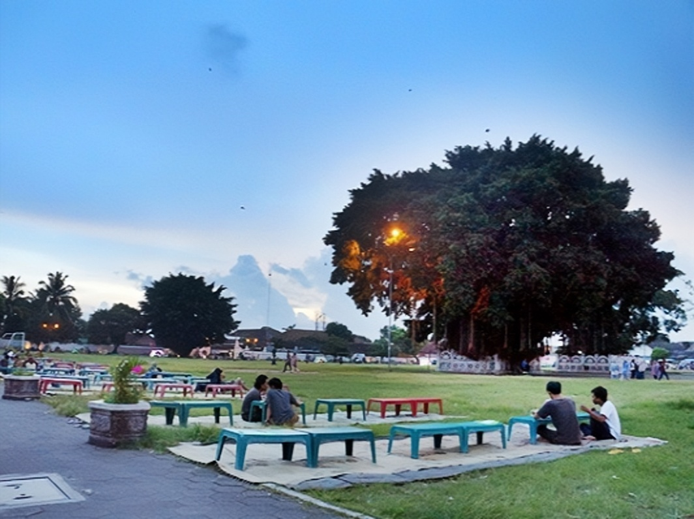
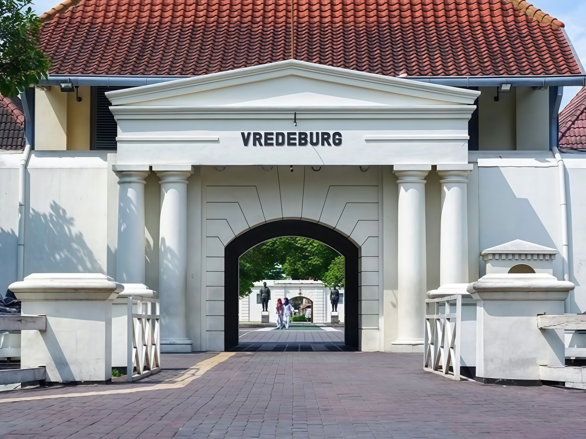
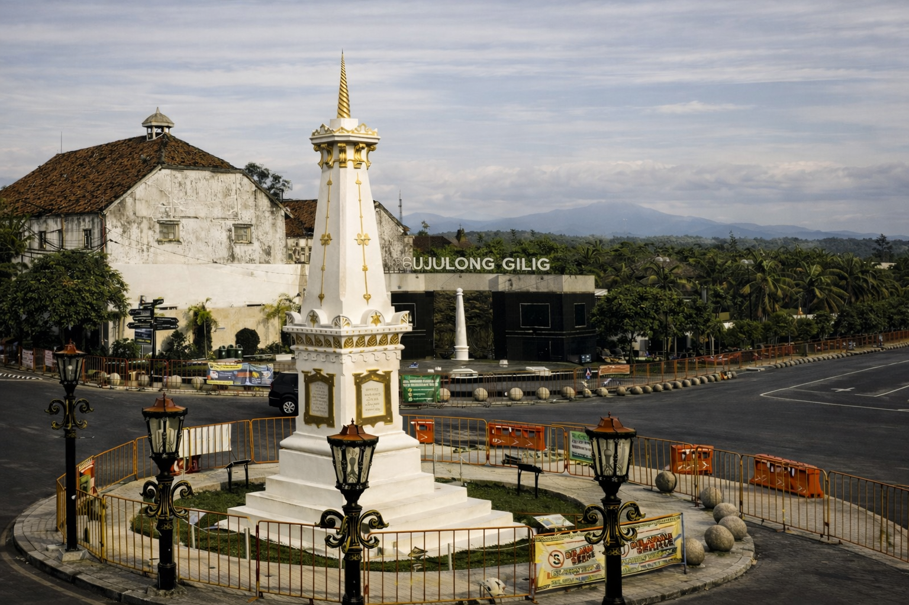

Destinasi Wisata
Malioboro

Malioboro menyimpan berbagai keunikan Budaya dan beberapa makanan / souvenir khas Jogja yang menjadi simbol kota Jogja.
Keraton Yogyakarta

Saat kalian mengunjungi Kraton Yogyakarta, kalian akan disambut oleh arsitektur megah yang memadukan gaya Jawa, Eropa, dan Tiongkok. Setiap sudutnya penuh dengan detail artistik yang memukau.
Tamansari

Taman Sari adalah tempat yang menawarkan pengalaman bersejarah dan visual yang menarik. Wisatawan dapat menikmati gambar Taman Sari, menjelajahi arsitektur kuno, serta mengabadikan momen di berbagai sudut fotogenik.
Alun-Alun Kidul
Anda bisa merasakan suasana khas malam yang penuh warna, jajanan lokal yang menggoda, hingga tantangan mistis “dua pohon beringin”.
Benteng Vredeburg
Di sejumlah bangunan di dalam benteng ini terdapat diorama mengenai sejarah Indonesia.Saat ini, Museum Benteng Vredeburg berada dalam naungan Museum dan Cagar Budaya, Kementerian Kebudayaan Republik Indonesia.
Taman Pintar

Taman Pintar menggunakan konsep bermain sambil belajar sehingga dapat dikunjungi oleh semua usia. Apalagi ada banyak wahana menarik yang siap menemani wisatawan menghabiskan waktu liburan sekaligus mengenal dunia sains dan teknologi lebih jauh lagi.
Sono budoyo

Museum Sonobudoyo memiliki koleksi kurang lebih 42.700 benda sejarah maupun karya seni.Selain menyajikan benda-benda peninggalan sejarah dan karya seni, museum ini juga rutin mengadakan pagelaran wayang kulit. Pagelaran ini diadakan setiap hari Senin – Sabtu pada pukul 20.00 – 22.00 WIB.
Gembira Loka Zoo

Gembira Loka zoo merupakan kebun binatang yang memiliki koleksi satwa yang cukup lengkap, Selain sebagai tempat untuk melihat berbagai jenis satwa, Gembira Loka juga menawarkan berbagai fasilitas rekreasi seperti area bermain anak, taman air, dan permainan lainnya.
Titik Nol

Nol Kilometer Jogja merupakan landmark yang sangat populer di Yogyakarta.Di sekitar Nol Kilometer Jogja terdapat banyak toko oleh-oleh yang menjual berbagai macam cinderamata seperti kaos, topi, kalung, dan lain-lain.
Tugu Yogyakarta
Pengunjung bisa mendapatkan foto yang estetik, pengunjung bisa memotret Tugu Jogja saat senja tiba atau malam hari. Saat malam hari apalagi hujan pesonanya semakin tidak tertandingi.